Structs, Enums, and Match
structs shape your data. enums give it choices. match reads them back.
Your turn to build
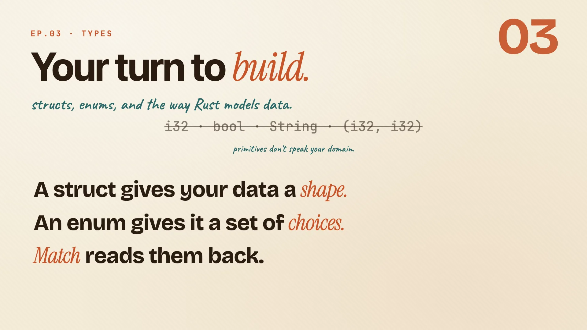
Ownership keeps your data safe. Now the harder question: how do you shape your data in the first place? So far you have integers, booleans, strings, tuples. They carry values, but none of them can say Player, and none can say Status. Two tools fix that.
- A struct gives your data a shape, with named fields you choose.
- An enum gives it a set of choices, one of which holds at any time.
- Pattern matching reads them both back, safely, at compile time.
Remember: structs shape it. enums choose it. match reads it.
Structs
Book · §5.1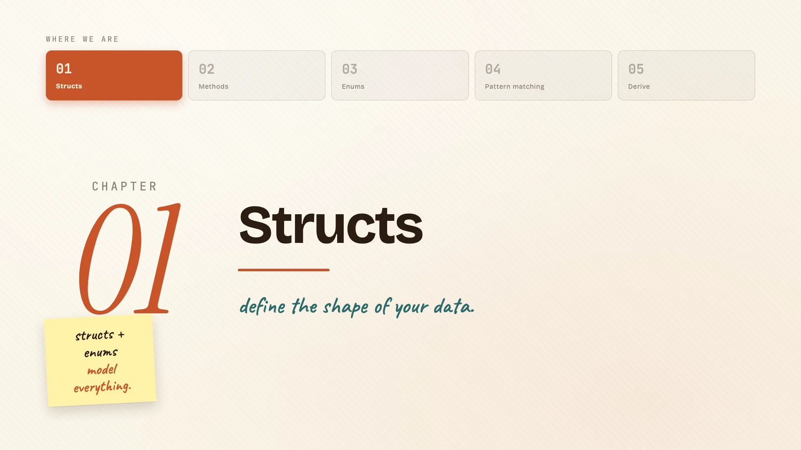
Define the shape of your data. Structs and enums model everything.
Define a struct
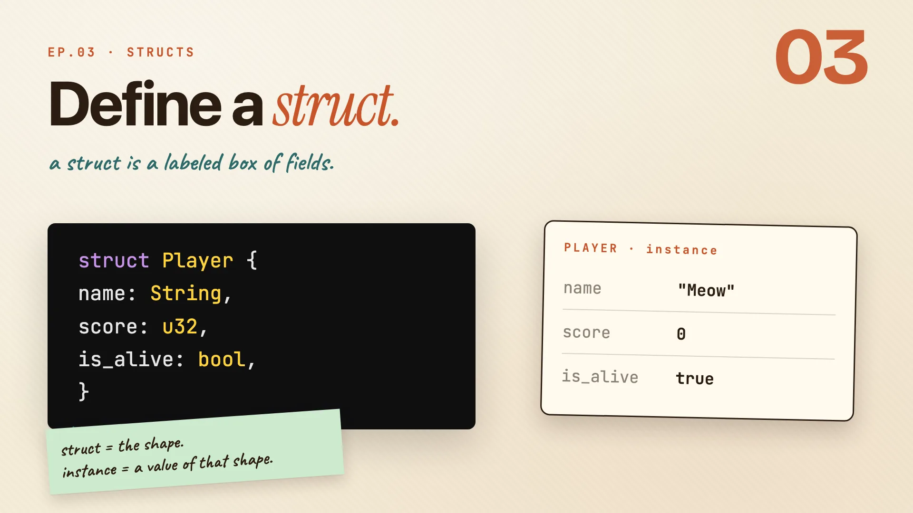
struct Player {
name: String,
score: u32,
is_alive: bool,
}
The struct keyword names a new type you define yourself. We're modeling a game character, so this one is Player. Inside the braces are the fields, each with a name and a type.
- We used
String, not&str. When the struct owns its data, the data lives as long as thePlayerdoes. References inside a struct work too, but they need lifetimes (chapter 10). - The definition is just the shape, the blueprint. It doesn't create a player yet.
To get a value, fill the shape in: one Player, named meow, score 0, alive.
Remember: struct = the shape. instance = a value of that shape.
Why not a tuple?
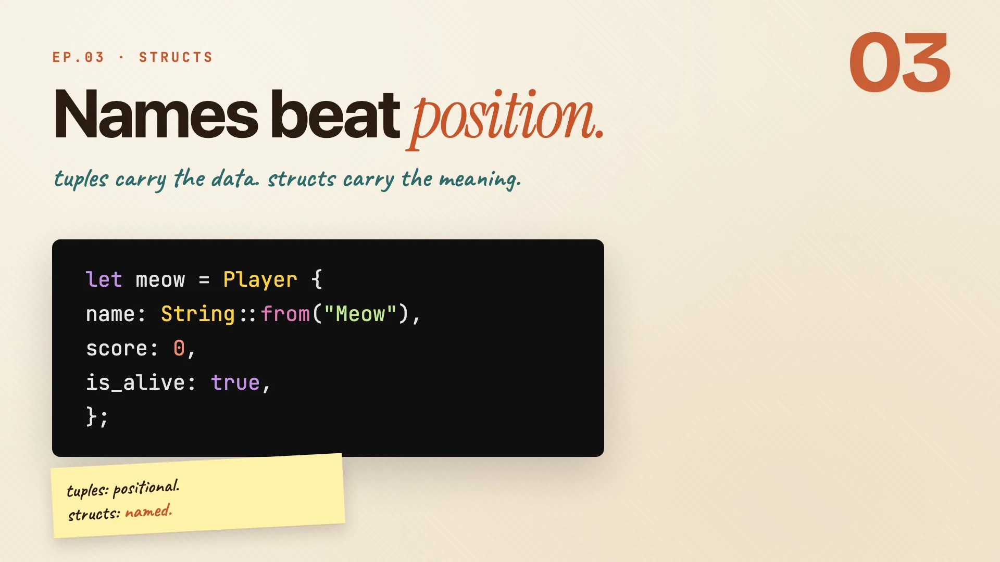
You could model a player with a tuple. The data fits, but what does each piece mean?
let meow = (String::from("Meow"), 0, true);
A struct names each piece:
let meow = Player {
name: String::from("Meow"),
score: 0,
is_alive: true,
};
- Same three values, same memory. But now anyone reading the code can tell what each piece represents.
- The compiler reads those names too. Misspell a field and you get a compile error before the bug ships:
error[E0609]: no field `scor` on type `Player` (did you mean `score`?)
Two or three obviously-related values, a tuple is fine. Beyond that, give the pieces names.
Remember: tuples are positional. structs are named.
Making and changing one
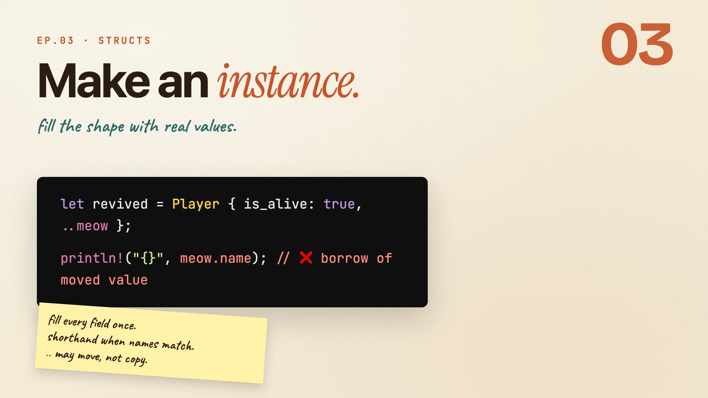
let mut meow = Player {
name: String::from("Meow"),
score: 0,
is_alive: true,
};
println!("{}", meow.score); // read
meow.score = 100; // write
- Fill every field once. Order is up to you. Read a field with a dot.
- To change a field, the whole
lethas to bemut. Rust has no per-field opt-in: the whole instance is mutable, or none of it is.
Field shorthand when a local already has the field's name, and update syntax to take the rest from another value:
let name = String::from("Meow");
let score = 0;
let meow = Player { name, score, is_alive: true }; // shorthand
let revived = Player { is_alive: true, ..meow }; // update syntax
println!("{}", meow.name); // value borrowed after move
- Catch:
..meowmoves the non-Copyfields out.nameis aString, so after thismeow.nameis gone.
Remember: fill every field once. shorthand when names match.
..may move, not copy.
Tuple and unit structs
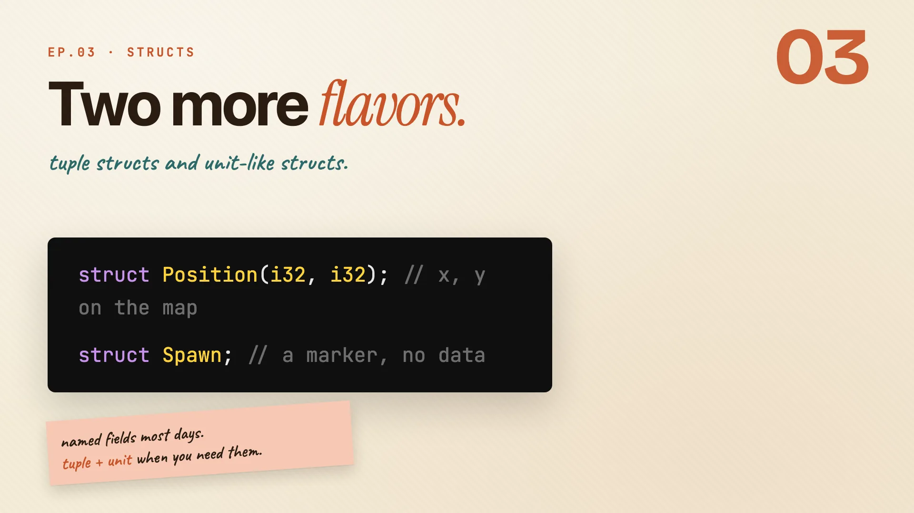
Two more struct shapes:
struct Position(i32, i32); // x, y on the map
let here = Position(meow.x, meow.y);
println!("at {}, {}", here.0, here.1);
- Tuple struct: fields by position, reached with
.0,.1, but with a real type name.
struct Inches(u32);
struct Centimeters(u32);
walk_cm(Inches(10)); // mismatched types
- Same shape, different identity.
InchesandCentimetersboth wrap au32, but the compiler treats them as different types.
struct Spawn; // a marker, no data
- Unit struct: no fields, just a name. Useful as a marker type (you'll see why in episode 06).
Remember:
Position(i32, i32)is a tuple struct.Spawnis a unit struct.Player { ... }is named.
One example, three shapes
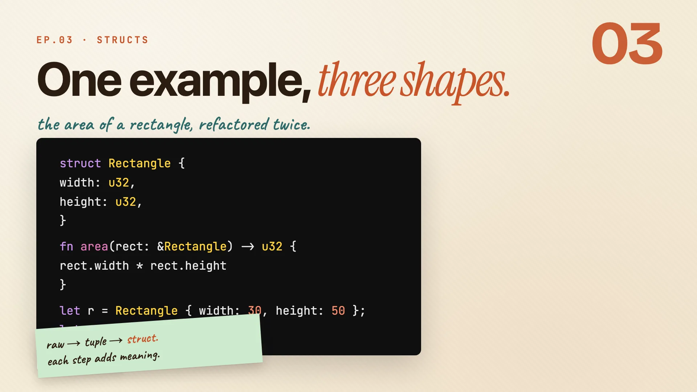
The area of a rectangle, refactored twice. Same answer (1500) each time, clearer intent each step:
fn area(width: u32, height: u32) -> u32 { width * height }
let result = area(30, 50); // raw params
fn area(dim: (u32, u32)) -> u32 { dim.0 * dim.1 }
let result = area((30, 50)); // tuple
struct Rectangle { width: u32, height: u32 }
fn area(rect: &Rectangle) -> u32 { rect.width * rect.height }
let r = Rectangle { width: 30, height: 50 };
let result = area(&r); // struct
- Raw params: two free-floating numbers. The caller has to remember the order.
- Tuple: grouped, but
.0and.1carry no meaning. - Struct: named fields.
rect.width * rect.heightreads like prose. The intent lives in the code.
Remember: raw -> tuple -> struct. each step adds meaning.
Seeing inside: Debug and dbg!
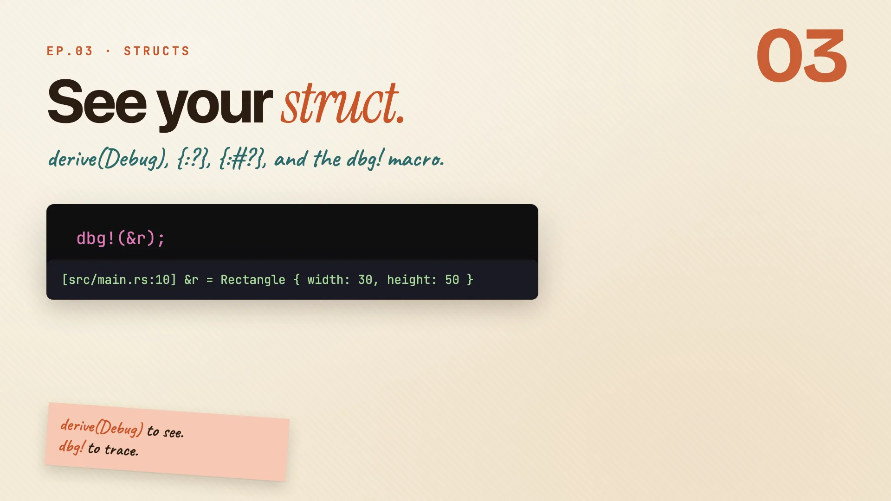
Want to print a struct? println!("{}", r) won't compile: Rectangle doesn't implement Display, and Rust won't write it for you. The debug formatter {:?} needs opting in too:
#[derive(Debug)]
struct Rectangle { width: u32, height: u32 }
let r = Rectangle { width: 30, height: 50 };
println!("{:?}", r); // Rectangle { width: 30, height: 50 }
println!("{:#?}", r); // pretty, one field per line
dbg!(&r); // prints file, line, expression, and value
Display({}) is for end users. You write it yourself.Debug({:?}) is the developer formatter. One#[derive(Debug)]and the compiler generates it.{:#?}pretty-prints.dbg!prints the expression and the value, and hands the value back, so it slots into any line.
Remember:
derive(Debug)to see.dbg!to trace.
Methods
Book · §5.3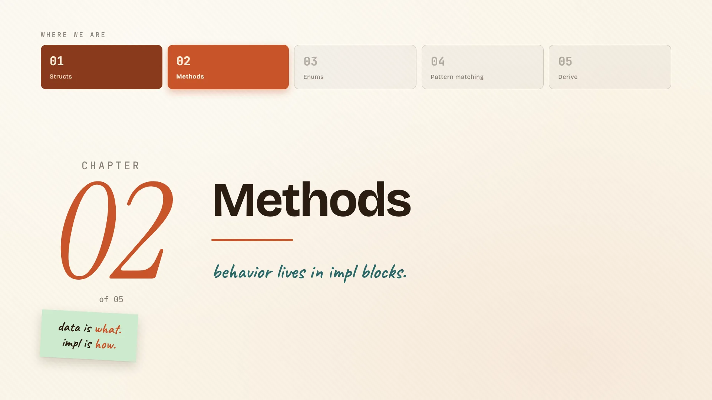
Behavior lives in impl blocks. Data is what, impl is how.
Behavior in impl
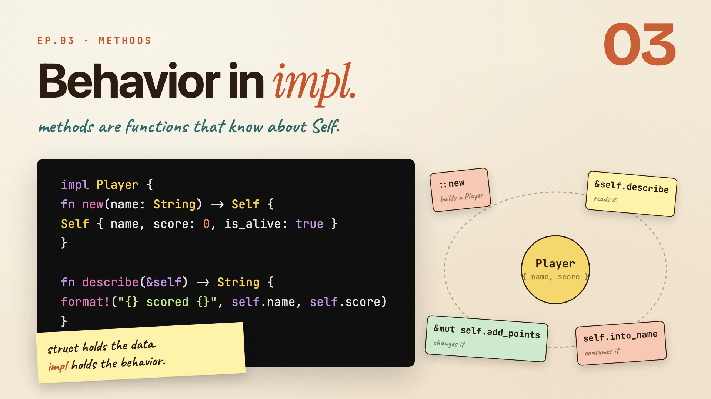
Data lives in the struct. Behavior lives in an impl block.
impl Player {
fn new(name: String) -> Self {
Self { name, score: 0, is_alive: true }
}
fn describe(&self) -> String {
format!("{} scored {}", self.name, self.score)
}
}
let meow = Player::new(String::from("Meow"));
let line = meow.describe();
describe(&self)borrows the player and reads its fields.&selfis shorthand forself: &Self.- At the call site you write
meow.describe(), not(&meow).describe(). Rust adds the reference for you. newhas noself. It builds a player and hands it back, so you call it on the type:Player::new(...). That's an associated function, where constructors live.
Remember: the struct holds the data. impl holds the behavior.
Three flavors of self
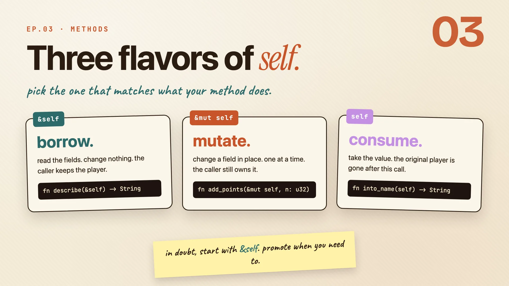
Every method asks: what does it need from the player? That answer picks the self:
fn describe(&self) -> String // borrow: read
fn add_points(&mut self, n: u32) // borrow: write
fn into_name(self) -> String // take: consume
self |
does | caller keeps the player? |
|---|---|---|
&self |
reads the fields, changes nothing | yes |
&mut self |
changes a field in place | yes (still owns it) |
self |
takes the value, consumes it | no, it's gone |
Start with &self. Promote to &mut self when you need to write. Use plain self only when you mean to consume (converting types, or a builder chain like Player::new("Meow").set_score(0).alive()).
Remember:
&selffirst.&mut selfwhen you write.selfwhen you take.
Methods take more than self
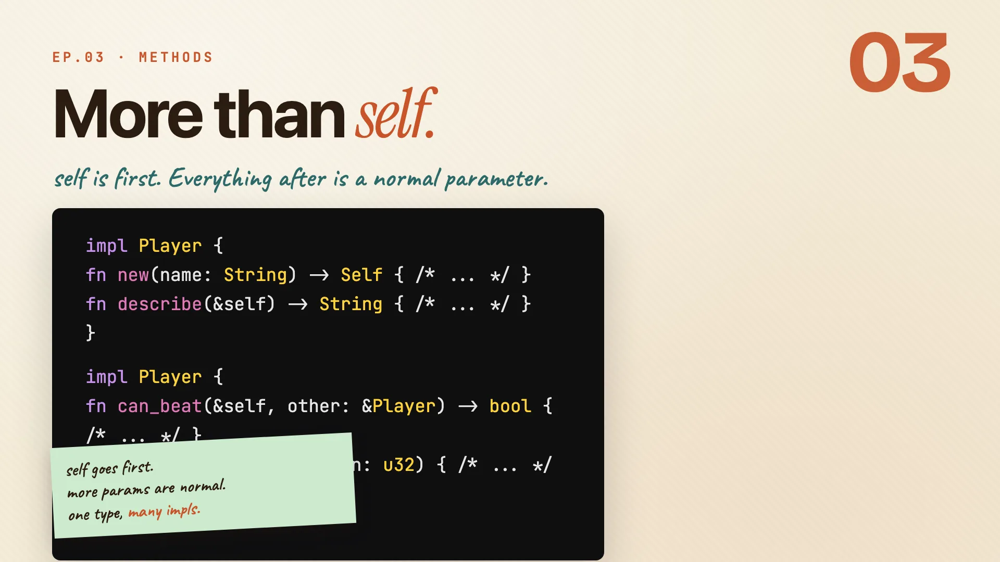
impl Player {
fn can_beat(&self, other: &Player) -> bool {
self.score > other.score
}
}
if meow.can_beat(&other) {
println!("victory!");
}
selfis always the first parameter. After that, methods look like any other function.- At the call site, Rust auto-references
meow, but the second player you reference yourself with&other, because it's a normal argument, not theself. - You can split methods across multiple
implblocks for the same type. The compiler treats them as one. Handy for grouping by purpose.
Remember: self goes first. more params are normal. one type, many impls.
Enums
Book · §6.1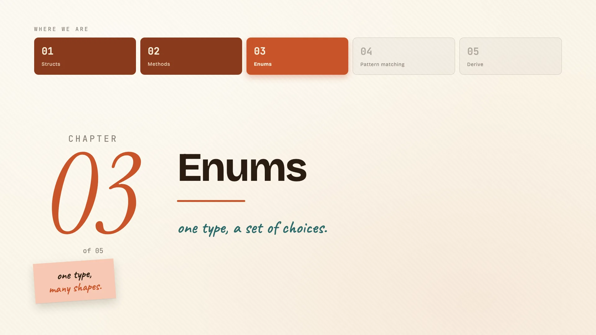
One type, a set of choices. One type, many shapes.
Enums carry data
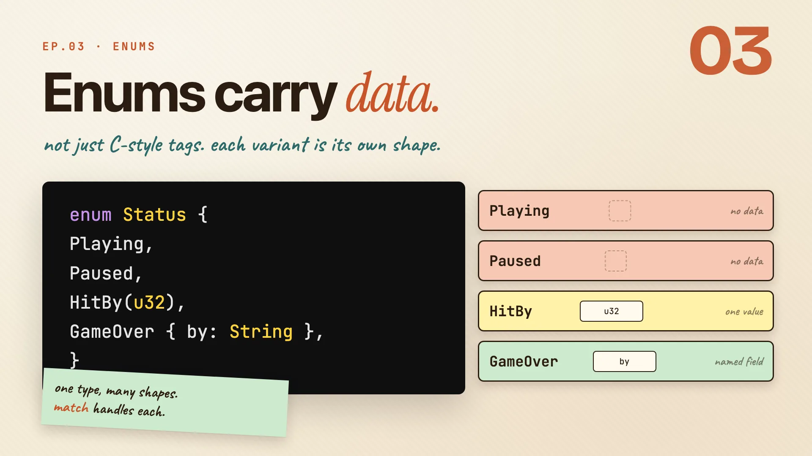
An enum is a type that is one of a fixed set of options:
enum Status {
Playing,
Paused,
HitBy(u32),
GameOver { by: String },
}
- A player's status is exactly one of these at a time. Never two.
- If you tried this with booleans (
is_playing,is_paused,is_hit,is_game_over), nothing would stop two beingtrueat once. The enum makes that impossible. - Rust enums aren't just tags.
HitBycarries a number (points lost),GameOvercarries a named field (who ended it). The data rides inside the variant.
Remember: one type, many shapes. match handles each.
Three variant shapes
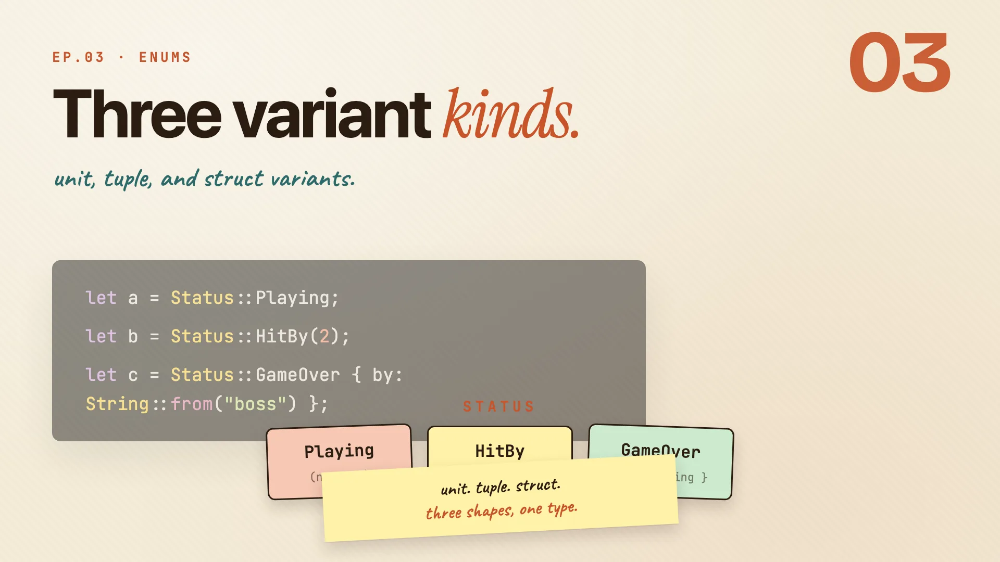
let a = Status::Playing;
let b = Status::HitBy(2);
let c = Status::GameOver { by: String::from("boss") };
- Unit variant: the name on its own, no data. Closest to a C-style enum.
- Tuple variant: values in parens. The data is part of the variant.
- Struct variant: named fields, like a tiny struct living inside one arm.
Three different shapes, one type for the compiler. That's what makes enums powerful.
Remember: unit. tuple. struct. three shapes, one type.
No null, just Option
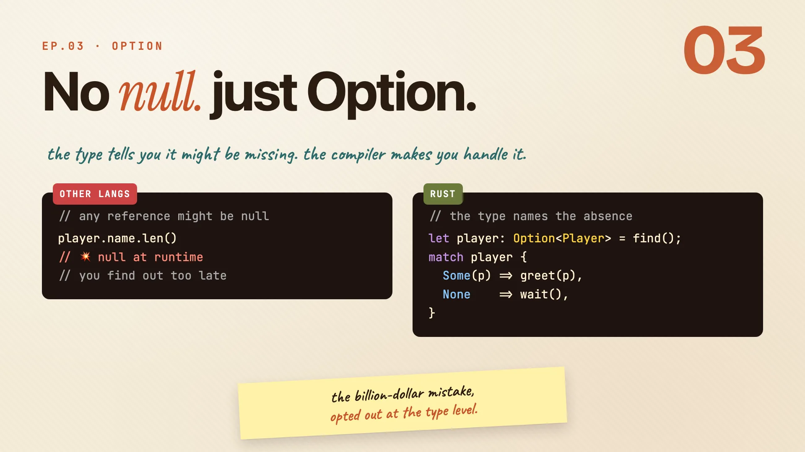
In many languages, any reference might secretly be null, and you find out at runtime, sometimes in production. Rust has no null. If a value might be missing, the type says so:
let player: Option<Player> = find();
match player {
Some(p) => greet(p),
None => wait(),
}
Option<T>isSome(T)orNone. You always know up front, from the type, whether something can be missing.- You can't use an
Option<i32>as ani32. Add one to it and the compiler stops you:
error[E0277]: cannot add `{integer}` to `Option<i32>`
- To get the value out, you handle both cases. The compiler won't let you skip
None.
Remember: the billion-dollar mistake, opted out at the type level.
Pattern matching
Book · §6.2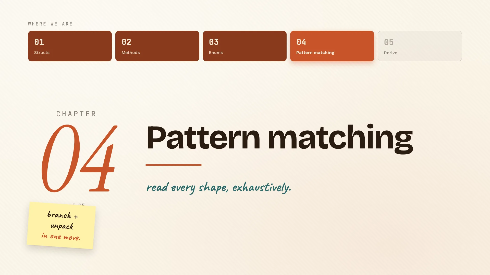
Read every shape, exhaustively. Branch and unpack in one move.
Read it with match
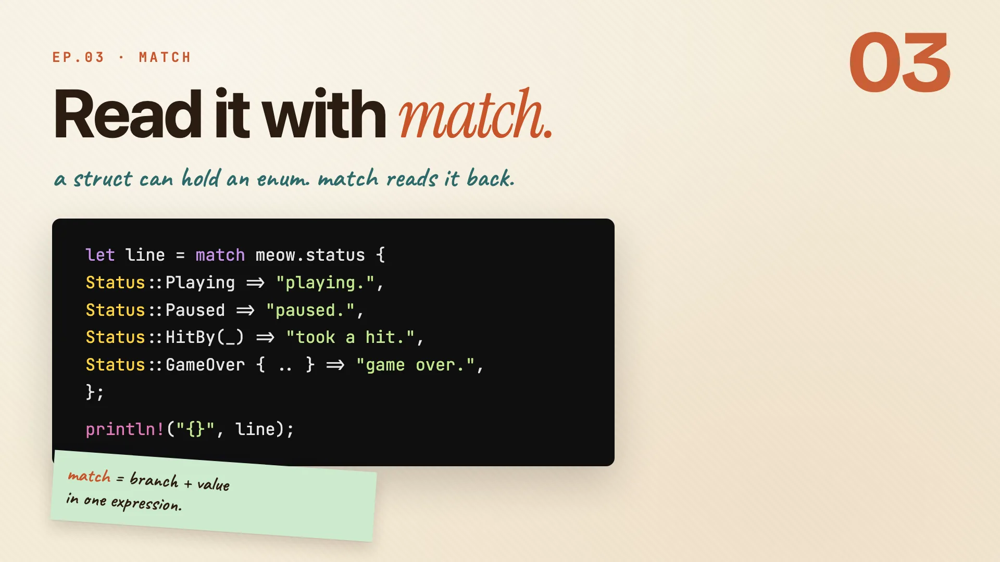
A struct can hold an enum, and match reads it back:
match meow.status {
Status::Playing => println!("go"),
Status::Paused => wait(),
Status::HitBy(points) => lose(&meow, points),
Status::GameOver { by } => over(by),
}
- One arm per variant. Rust tests top to bottom, the first that fits runs.
matchis an expression: every arm returns a value, and the wholematchreturns one. You can assign it withlet.- Patterns can bind the variant's data (next scene).
Remember: match = branch + value in one expression.
Patterns bind values
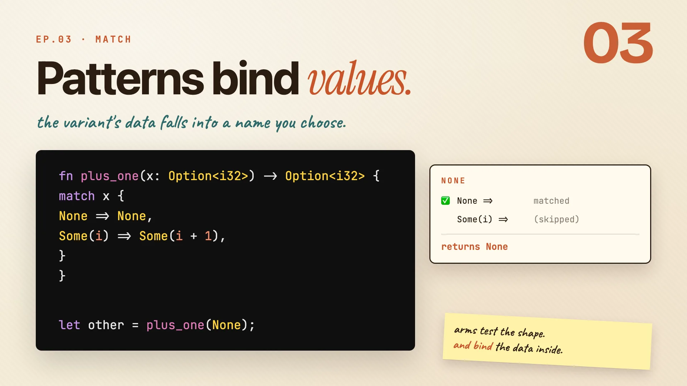
fn plus_one(x: Option<i32>) -> Option<i32> {
match x {
None => None,
Some(i) => Some(i + 1),
}
}
- In
Some(i), theiis a name. It binds to whatever number is inside theSome. - Call
plus_one(Some(5)): theNonearm doesn't fit,Some(i)does withi = 5, returnsSome(6). - Call
plus_one(None): theNonearm fits,Some(i)is never looked at, returnsNone.
Remember: arms test the shape, and bind the data inside.
Match must be exhaustive
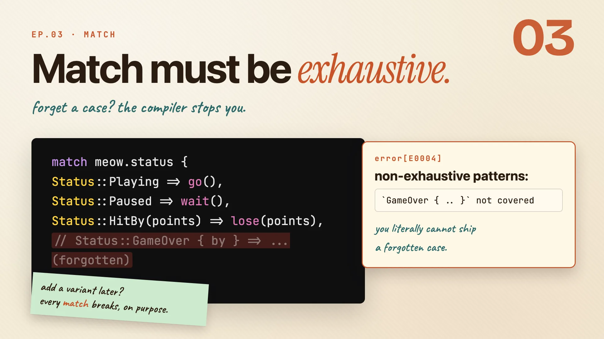
Forget a case and Rust won't build it:
error[E0004]: non-exhaustive patterns: `GameOver { .. }` not covered
The compiler even names the variant you missed. Add a new variant later, and every match on that type breaks until you handle it, on purpose.
When you don't want every case, catch the rest:
match dice_roll() {
3 => prize(),
7 => prize(),
other => print_roll(other), // binds the value
// _ => reroll(), // or drop it, no binding
}
other(a name) binds whatever didn't match above._is the catch-all that drops the value, no binding, no warning.
Remember: exhaustive by default.
otherto keep,_to drop.
if let and while let
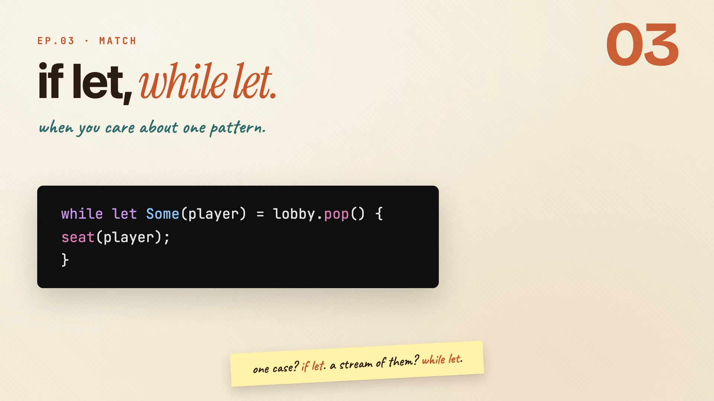
Sometimes you only care about one variant. A full match is noisy for that.
if let Status::HitBy(points) = meow.status {
lose(&meow, points);
} else {
keep_going(&meow);
}
while let Some(player) = lobby.pop() {
seat(player);
}
if letruns the block only when the pattern fits, and binds the data. It's amatchtrimmed to one arm. Addelsefor a fallback.while letloops as long as the pattern keeps fitting. The momentpop()returnsNone, the loop ends.
| Use | When |
|---|---|
match |
you care about every case |
if let / if let ... else |
one case, optional fallback |
while let |
drain a stream while it holds |
Remember: one case? if let. a stream? while let.
Derive
Book · §5.2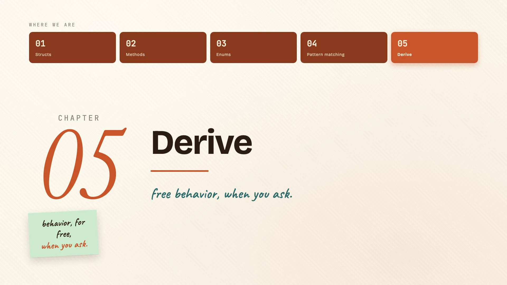
Free behavior, when you ask.
The rest of derive
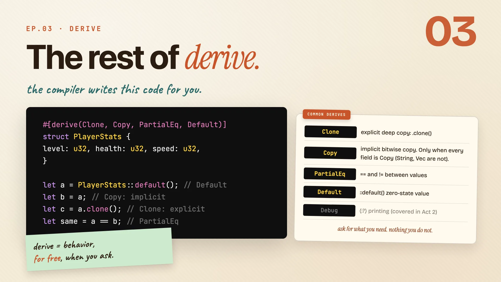
One line above a struct asks the compiler to write code for you:
#[derive(Clone, Copy, PartialEq, Default)]
struct PlayerStats {
level: u32,
health: u32,
speed: u32,
}
let a = PlayerStats::default(); // Default
let b = a; // Copy: implicit
let c = a.clone(); // Clone: explicit
let same = a == b; // PartialEq: ==
Cloneis the explicit deep copy:.clone(). Never silent, you typed the word.Copyis implicit and bitwise, only allowed if every field isCopy(aStringorVecrules it out).let b = acopies and leavesausable.PartialEqgives you==and!=, compared field by field.DefaultgivesPlayerStats::default(), every field at its zero state.
Remember: derive = behavior, for free, when you ask.
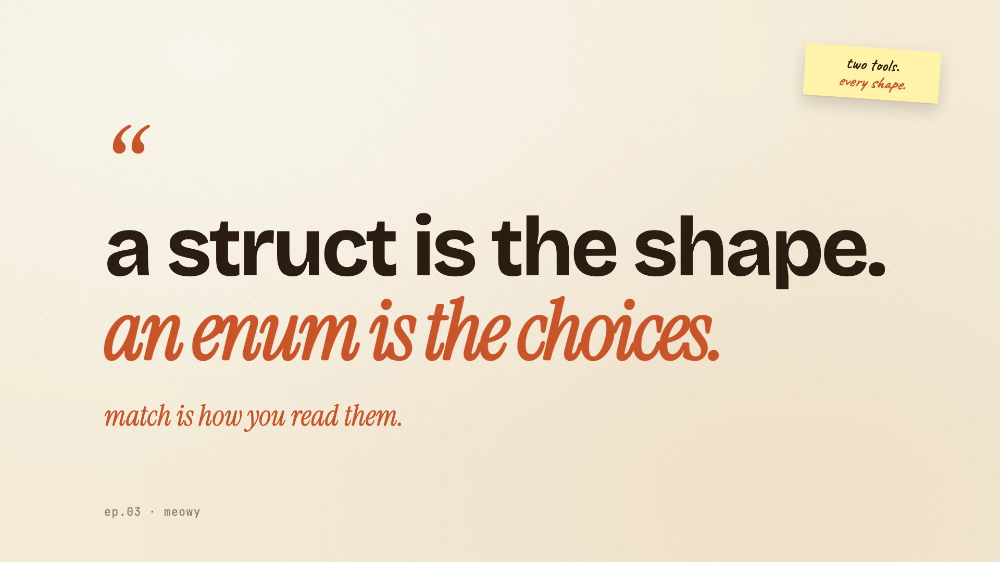
The whole episode in three ideas:
A struct is the shape. An enum is the choices. Match is how you read them back.
Cheatsheet recap
One line per idea, in order. Skim this when you just need the reminder.
| Idea | Remember |
|---|---|
| Your turn to build | structs shape it. enums choose it. match reads it. |
| Define a struct | struct = the shape. instance = a value of that shape. |
| Why not a tuple? | tuples are positional. structs are named. |
| Making and changing one | fill every field once. shorthand when names match. .. may move, not copy. |
| Tuple and unit structs | Position(i32, i32) is a tuple struct. Spawn is a unit struct. Player { ... } is named. |
| One example, three shapes | raw -> tuple -> struct. each step adds meaning. |
| Seeing inside: Debug and dbg! | derive(Debug) to see. dbg! to trace. |
| Behavior in impl | the struct holds the data. impl holds the behavior. |
| Three flavors of self | &self first. &mut self when you write. self when you take. |
| Methods take more than self | self goes first. more params are normal. one type, many impls. |
| Enums carry data | one type, many shapes. match handles each. |
| Three variant shapes | unit. tuple. struct. three shapes, one type. |
| No null, just Option | the billion-dollar mistake, opted out at the type level. |
| Read it with match | match = branch + value in one expression. |
| Patterns bind values | arms test the shape, and bind the data inside. |
| Match must be exhaustive | exhaustive by default. other to keep, _ to drop. |
| if let and while let | one case? if let. a stream? while let. |
| The rest of derive | derive = behavior, for free, when you ask. |
Practice: Rustlings
07_structs, 08_enums, 12_options.